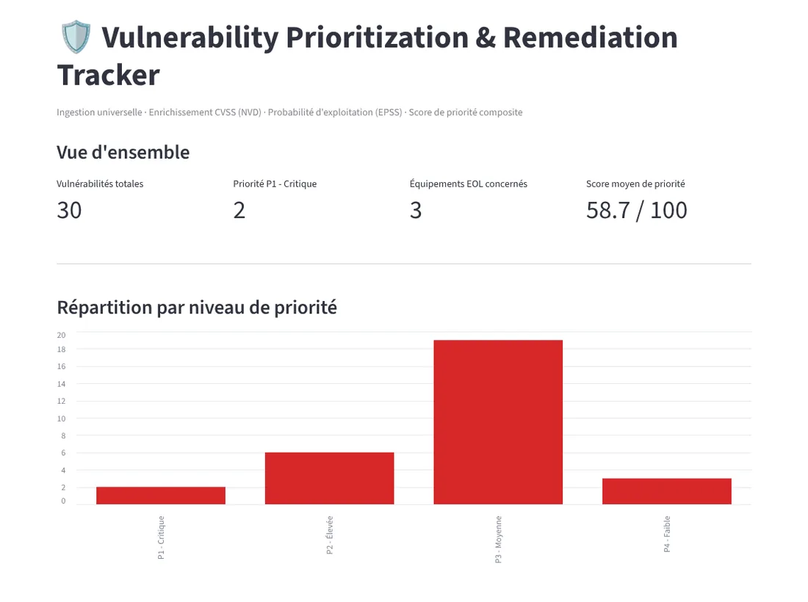

Priorisation des vulnérabilités
Un score de gravité élevé ne veut pas dire qu'une faille est vraiment dangereuse. Cet outil croise trois signaux pour trier le vrai du théorique, à partir de données réelles du catalogue CISA KEV.

- 3signaux combinés : CVSS, EPSS et criticité métier
- 30vulnérabilités triées sur le jeu de démonstration
- P1 à P4niveaux de priorité, chacun avec un score sur 100
Pourquoi trois signaux
La gravité technique (CVSS) dit ce qu'une faille permettrait en théorie. La probabilité d'exploitation (EPSS) dit si quelqu'un l'exploite vraiment. La criticité métier dit si le système touché compte pour l'entreprise. Aucun des trois ne suffit seul : c'est leur croisement qui donne l'ordre dans lequel corriger.
Ce que produit l'outil
Un tableau de bord avec la répartition par priorité, un tableau de toutes les failles avec leur score sur 100, et un plan de remédiation en Excel et en PDF.
Un socle réutilisé
Le module qui lit les exports est celui de l'outil de revue d'accès, repris sans modification. Un seul socle sert deux métiers, ce qui m'a permis de construire celui-ci beaucoup plus vite.
Le même module de lecture alimente la détection d'anomalies d'accès et le scoring des vulnérabilités.
Captures
Cliquez sur une image pour l'agrandir.
BudgetTracker pour iOS
Vous recrutez en cybersécurité, IAM ou réseaux ?
Je cherche mon premier CDI en Île-de-France, à partir de novembre 2026. Écrivez-moi, on en parle.
gbenoudylan@gmail.com